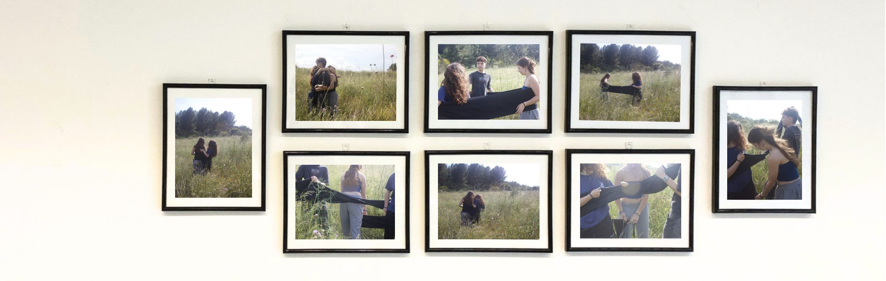
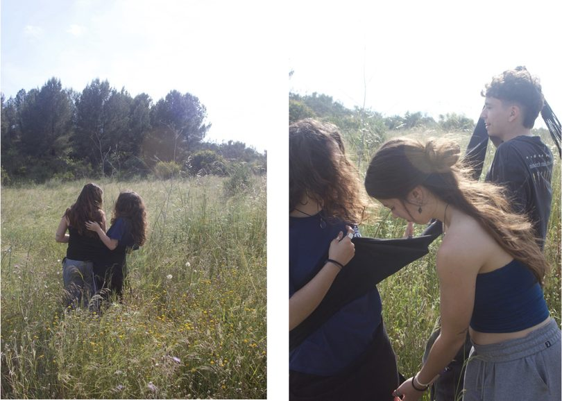
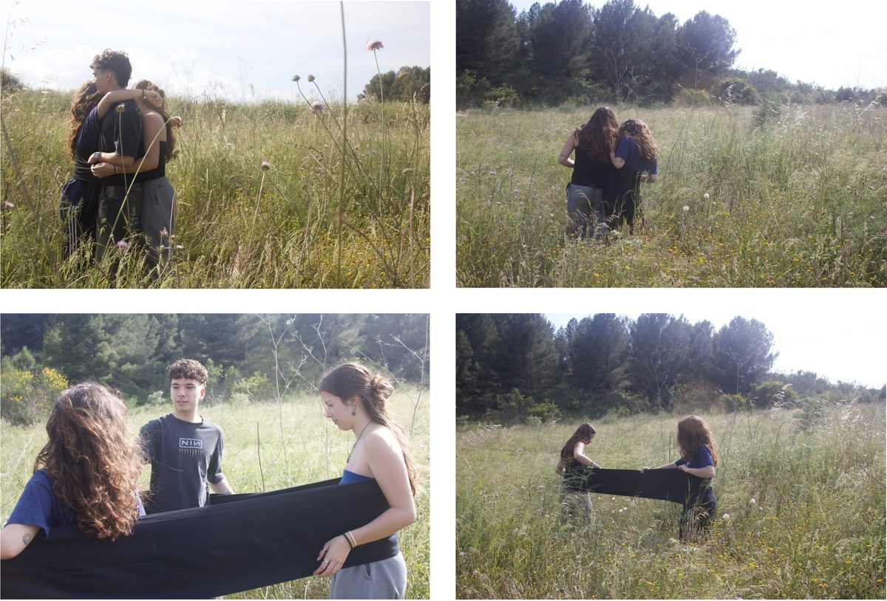
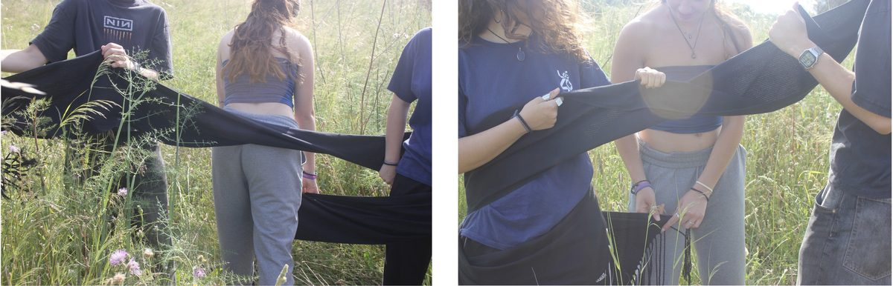

Lligams.
Lligams neix d’un procés personal de superació d’un trauma relacionat amb el contacte físic, que amb el temps ha passat de ser una experiència dolorosa a convertir-se en un espai segur i compartit. El projecte no busca reviure el dolor ni explicar-ne l’origen, sinó homenatjar el procés de superació i reconciliació amb el propi cos. A través d’una faixa castellera realitzo una acció col·lectiva amb amistats properes en un entorn natural. L’acte d’enrotllar-nos amb la faixa es converteix en una metàfora dels vincles que ens sostenen i ens ajuden a sanar. Les vuit fotografies resultants són una celebració dels vincles que he construït i de la capacitat de tornar a sentir-me còmoda en el contacte amb els altres.

Lligams. 2025.
Instal·lació fotogràfica.
Paper fotogràfic setinat de 230 gm. 15 x 20 cm.


